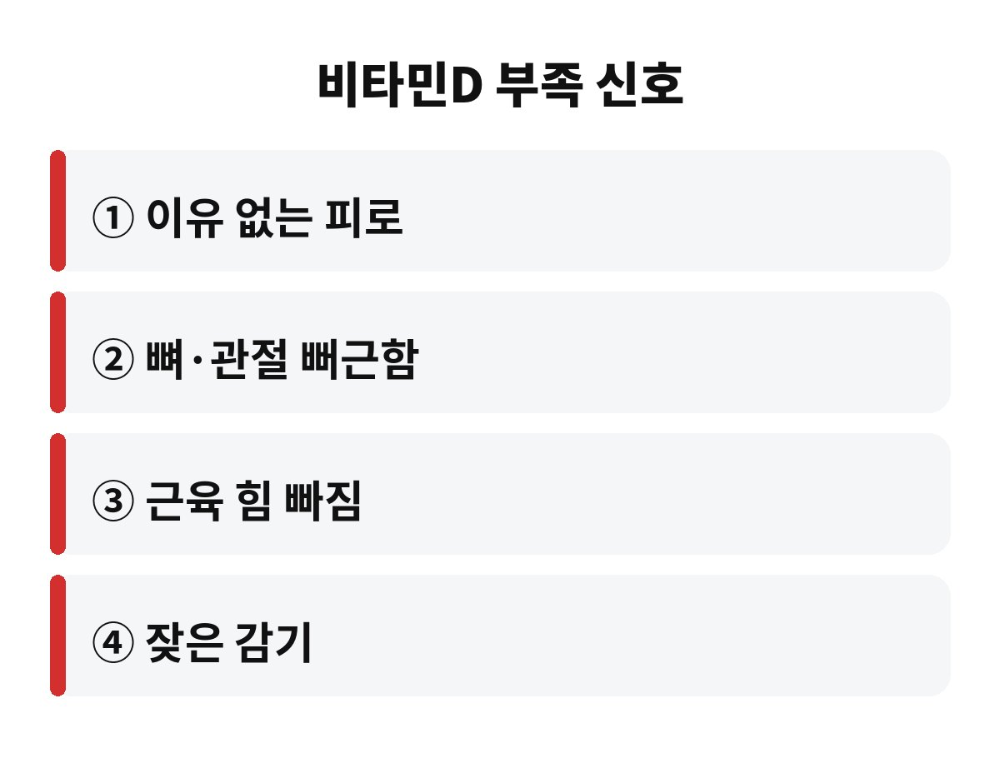
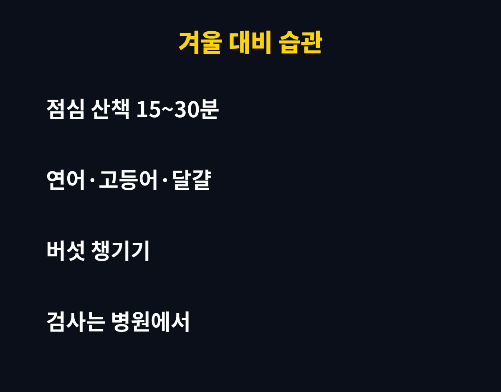

비타민D 부족 증상은 이유 없는 피로, 뼈·관절 뻐근함, 근육 힘 빠짐으로 먼저 나타나는 경우가 많고, 하루 15~30분 정도 햇볕을 쬐는 습관이 기본 대비책으로 알려져 있어요.
하루 종일 사무실에만 있는 직장인이라면 요즘처럼 해가 짧아지는 10월부터가 진짜 시작인데요, 내 몸은 지금 괜찮은 걸까요?
비타민D는 칼슘이 뼈에 잘 붙도록 도와주는 영양소예요. 그래서 모자라면 뼈와 근육 쪽에서 신호가 오기 쉽죠. 대표적으로 잠을 충분히 자도 계속 피곤하고, 허리나 무릎이 괜히 뻐근하고, 계단 오를 때 다리에 힘이 빠지는 느낌이 들 수 있어요.
물론 이런 증상은 다른 원인으로도 생기기 때문에 "나는 비타민D 부족이다"라고 혼자 단정하시면 안 돼요. 다만 겨울이 가까워질수록 햇볕 시간이 줄어드니 한 번쯤 내 생활을 돌아볼 타이밍인 건 맞아요.
비타민D는 음식으로 얻는 양보다 피부가 햇볕을 받아 스스로 만드는 양이 큰 영양소로 알려져 있어요. 그런데 출근할 때 어둑하고, 퇴근할 때 또 어둑하고, 낮에는 건물 안이면 어떨까요? 햇볕을 직접 받을 시간이 거의 없죠.
게다가 유리창 너머로 들어오는 햇볕으로는 충분히 만들어지기 어렵다고 해요. 창가 자리라서 괜찮다고 생각하셨다면 살짝 아쉬운 소식이에요. 또 선크림을 꼼꼼히 바르고 긴 옷을 입는 계절에는 더 줄어들 수 있고요.
"30분"은 정답이라기보다 많이 언급되는 기준에 가까워요. 피부색, 나이, 계절, 지역, 시간대에 따라 필요한 시간이 달라질 수 있거든요. 그래서 이 글에서는 하루 15~30분 정도, 팔과 얼굴이 햇볕을 받도록 걷는 습관을 현실적인 목표로 잡아볼게요.
꼭 운동복을 입고 나가야 하는 건 아니에요. 점심 먹고 건물 주변을 한 바퀴 도는 것만으로도 충분히 시작이 돼요. 대신 한여름 땡볕 같은 강한 자외선을 오래 받는 건 피부에 부담이니, 무리하지 않는 게 좋아요.
참고로 비타민D가 부족한 상태는 겉으로 티가 잘 안 나는 경우가 많아요. 그래서 "그냥 나이 들어서 그런가?" 하고 넘기다가 뒤늦게 알게 되는 분들이 적지 않죠. 특히 폐경 이후 여성이나 어르신, 실내 생활이 긴 분들은 뼈 건강 때문에 더 신경 쓰라고 권해지는 편이에요. 부모님이 요즘 부쩍 무릎이나 허리가 불편하다고 하신다면, 햇볕 쬐는 시간이 충분한지 한 번 여쭤보세요.

| 구분 | 내용 |
| 생활 습관 | 점심 산책 15~30분, 가능하면 오전~낮 시간 |
| 음식 | 연어·고등어 같은 생선, 달걀, 버섯류 |
| 확인 | 걱정되면 병원에서 혈액검사로 수치 확인 |
음식으로는 연어, 고등어 같은 기름진 생선, 달걀, 말린 버섯류에 비타민D가 들어 있어요. 다만 이것만으로 충분히 채우기는 쉽지 않다고들 해요. 그래서 영양제를 떠올리시는 분이 많은데, 여기서 주의할 점이 있어요.
비타민D는 지용성이라 몸에 쌓일 수 있어서 많이 먹을수록 좋은 영양제가 아니에요. 이미 종합비타민이나 칼슘제에 들어 있는 경우도 있어서, 중복해서 먹고 있지는 않은지 라벨부터 확인해 보세요. 신장 질환이 있거나 복용 중인 약이 있다면 더더욱 의사나 약사와 먼저 상의하시는 게 안전해요.
또 하나, 꾸준함이 정말 중요해요. 며칠 몰아서 오래 쬐는 것보다 짧아도 자주 쬐는 쪽이 부담도 적고 습관이 되기도 쉬워요. 알람을 맞춰두고 점심 후 10분만 먼저 걸어보세요. 그 10분이 겨울을 건강하게 나는 시작이 될 수 있어요.

어렵게 생각하지 말고 세 가지만 해보세요. 첫째, 점심시간에 밖으로 나가 걷기. 둘째, 일주일에 두세 번은 생선이나 달걀 반찬 챙기기. 셋째, 피로나 뼈 쪽 불편함이 오래가면 검사로 확인하기. 이 정도만 해도 겨울 준비는 꽤 든든해요.
혹시 나는 하루 중 햇볕을 직접 받는 시간이 얼마나 되는지 떠올려 보셨나요? 댓글로 알려주시면 같이 방법을 찾아봐요. 도움이 되셨다면 구독 눌러두시고 다음 건강 이야기도 받아 보세요.
※ 이 글은 일반적인 건강 정보이며 진단이나 치료를 대신하지 않습니다. 증상이 있거나 영양제 복용을 고민 중이라면 반드시 전문의와 상담하세요.